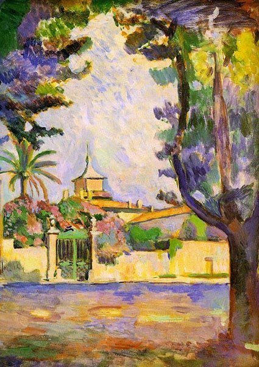
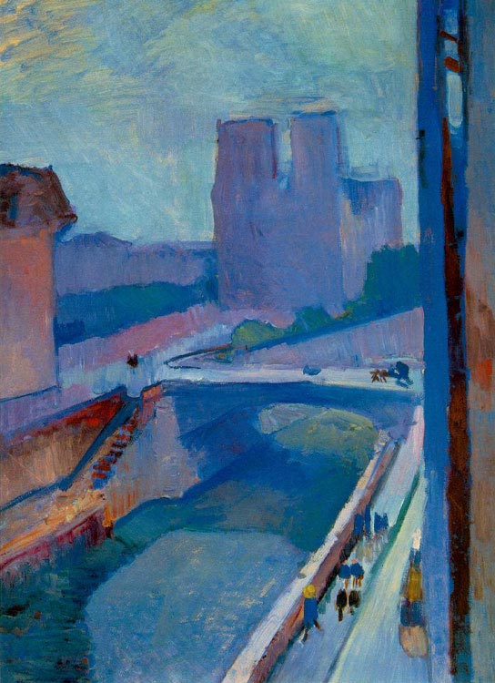
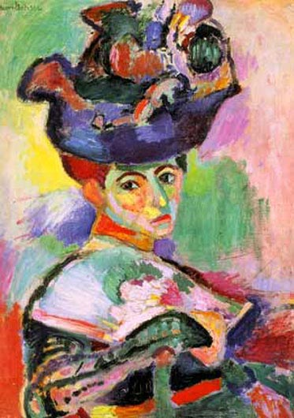

|
Анри Матисс | |
| Анри Матисс – один из величайших французских художников и скульпторов. Один из основателей течения фовистов. В своем творчестве стремился к передаче эмоций через цвет. На своем творчестве испытал воздействие исламской культуры западного Магриба. Родился 31 декабря 1869 года в городе Ле Като, скончался 3 ноября 1954 года в городке Симье. | |
| 1 - Площадь в Сен-Тропе, 1904; 2 - Очертания Нотр-Дам ночью, 1902; 3 - Женщина в шляпе, 1905. | |
|
   |
|
|
email: danredtu1103@mail.ru |